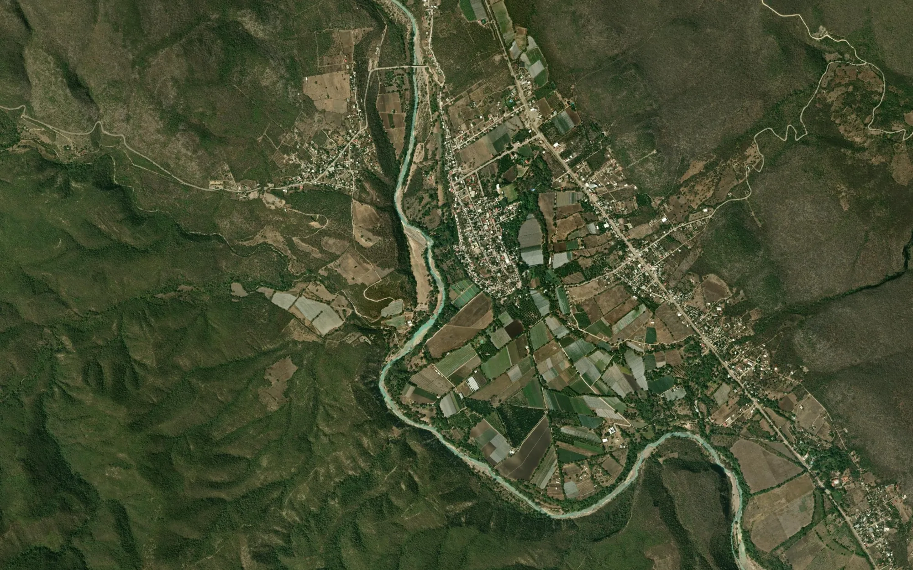
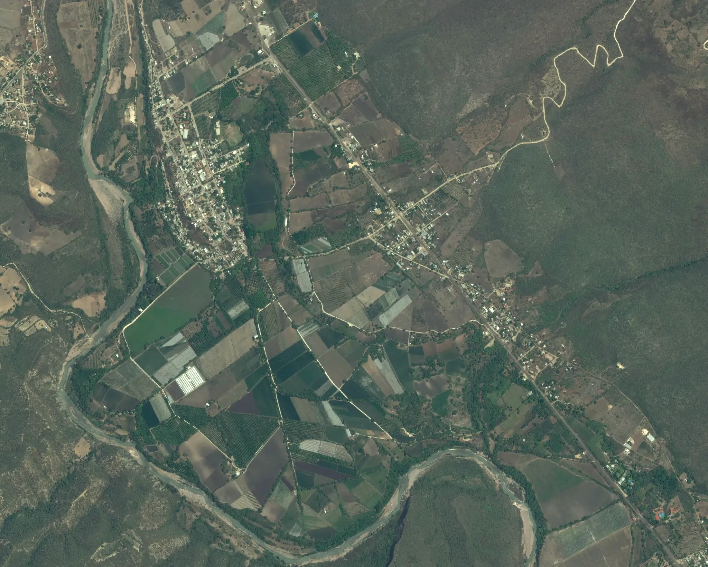
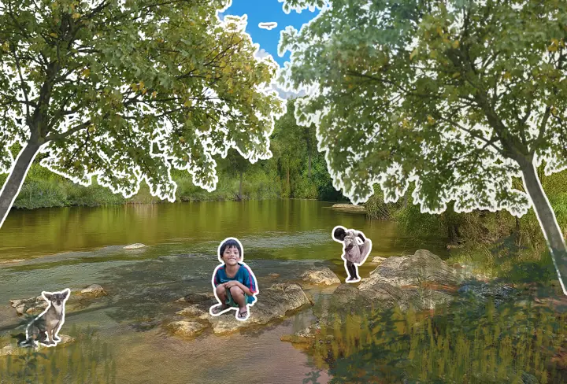
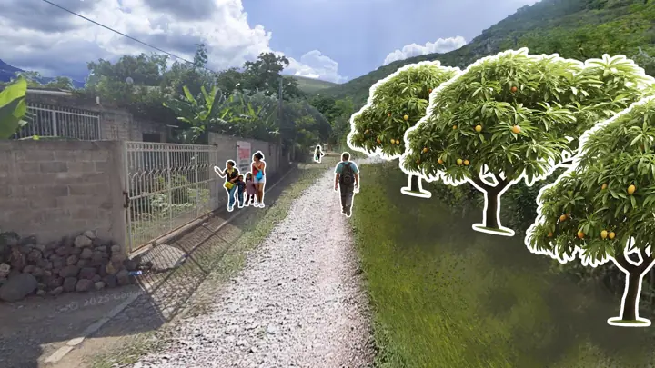

Si solo tienes dos minutos
El proyecto, contado por quienes lo hicieron
Los talleres, el mapa, la maqueta y lo que la gente del valle acordó cuidar. Míralo antes de seguir.
Al reproducir se carga contenido de YouTube. Ver también un video por cada propuesta →
¿Por qué este proyecto?
El valle está creciendo sin orden
El problema
Las casas avanzan sobre las parcelas, hay conflictos por el uso del suelo y el río Santa María resiente los daños. La ley dice que la gente debe participar en estas decisiones, pero en la práctica no hay espacios reales para dialogar ni reglas claras que se apliquen: nadie está llevando el timón del territorio.
Qué propone el proyecto
Cambiar la forma en que se decide sobre el territorio. En lugar de consultas de un solo día, un proceso donde los habitantes aprenden, discuten y construyen acuerdos entre todos, para que la comunidad incida de verdad en el Plan de Desarrollo Urbano: cuidar la naturaleza, mantener viva la agricultura y crecer con responsabilidad, al mismo tiempo.
Lo impulsan el Laboratorio de Desarrollo Rural (Facultad de Ciencias Naturales) y el Grupo Colegiado Ciudad, Territorio e Investigación Proyectual (Facultad de Ingeniería) de la Universidad Autónoma de Querétaro.

A ese precio ya se vende la tierra entre Las Trancas y El Salitrillo, muchas veces sin escrituras: lotes marcados con piedras o cercas.
Reporte del taller 1, febrero de 2025«Hace 35 años el río medía de 35 a 45 metros de ancho; hoy mide de 10 a 15.» Lo anotó la gente al hablar de la extracción de arena.
Línea del tiempo del taller 1, febrero de 2025No hay vigilancia suficiente ni formas seguras de avisar cuando algo cambia. Y no queda claro quién decide: la asamblea o el plan.
Reporte del taller 1, febrero de 2025El valle desde arriba
Mueve la línea: quince años de cambios
La misma vista del valle en 2010 y en 2026. Busca tu parcela, el río, la orilla de la carretera. ¿Qué cambió?


20102026- La carretera. Donde en 2010 había huertas y parcelas a la orilla de la carretera, hoy hay casas y negocios a los dos lados.
- El Crucero. El Crucero creció y se extendió hacia el cerro.
- Lotes nuevos. Aparecen casas y calles nuevas donde antes había campo.
Imágenes: Esri World Imagery (Wayback), Maxar y Earthstar Geographics. Tomadas el 7 de noviembre de 2010 y el 28 de febrero de 2026, según los metadatos del archivo. Las marcas son una lectura a simple vista, no una medición.
Para empezar
¿Qué es un ecotono?
Un ecotono es la franja donde dos mundos se encuentran. Son los bordes que mantienen unido al valle, y los primeros que se pierden cuando el crecimiento no tiene orden. Sigue bajando para recorrerlos.
El valle, del río al cerro
Baja despacio. Vas a cruzar el valle de lado a lado y a detenerte en sus tres bordes.
Donde el agua toca las parcelas
La orilla con árboles que dan sombra al río y el suelo que filtra el agua de los manantiales. Cuidarlo es cuidar el agua.

Donde las parcelas tocan el pueblo
Las huertas y árboles que marcan hasta dónde llegan las casas. Cuidarlo evita que el pueblo crezca sobre la tierra de cultivo.

Donde el campo sube al cerro
El monte que guarda a los animales, las veredas y la historia. Cuidarlo protege el cerro y sus caminos.

Y si el valle crece sin orden
El río se queda sin ribera, el pueblo sin borde y el cerro sin franja: bardas en la parcela, arena sacada del cauce, cabañas en el monte. Es lo que la gente ya ve pasar.
Cuidar esos bordes es el proyecto
Un área agrícola al centro y un cinturón de ecotonos que la protege. De eso tratan las siete propuestas.
Tu comunidad
¿De dónde eres?
Elige tu comunidad y mira qué parte del proyecto te queda más cerca.
Yo cuido el valle
0personas del valle ya se sumaron
Sigue el recorrido
Ya viste el valle de hoy. Faltan tres pasos.
No hace falta leerlo todo de una vez. Cada paso es una página corta que dice al entrar qué contiene.
Cómo llegamos aquí
La historia del valle contada por su gente, lo que escribieron sobre el mapa, los tres talleres y los dos futuros que imaginaron.
Empezar aquí → 3Las propuestas
Los lugares que están en juego, el mapa del valle por capas, las siete propuestas con sus videos y el parque lineal.
Ver las propuestas → 4Qué sigue
Cómo se pasa del papel al territorio, qué le toca a cada quien y los documentos para llevar a la asamblea.
Ver qué me toca →Herramientas para la ciudadanía
Consulta la regla. Avisa cuando se rompe.
Dos puertas para que cuidar el valle no dependa de conocer a alguien en la presidencia: una para saber qué se puede en cada lugar y otra para avisar cuando algo cambia sin permiso.
¿Esto se puede aquí?
El Programa Municipal de Desarrollo Urbano, en llano. Toca tu zona en el mapa y mira qué se permite, qué trámite pide y a quién preguntar. Con buscador de negocios: escribe «cabañas», «tortillería» o «lotificar» y te dice dónde sí.
Consultar el PMDU → Propuesta en construcción Piloto previsto: marzo de 2027¿Viste un cambio en el valle?
El mecanismo de reporte ciudadano de cambio de uso de suelo: un aviso con foto y lugar, un folio, una persona que va y revisa, y una respuesta. Sin exponer a quien avisa. Conoce cómo funcionará y pruébalo en una simulación.
Ver el mecanismo de reporte →